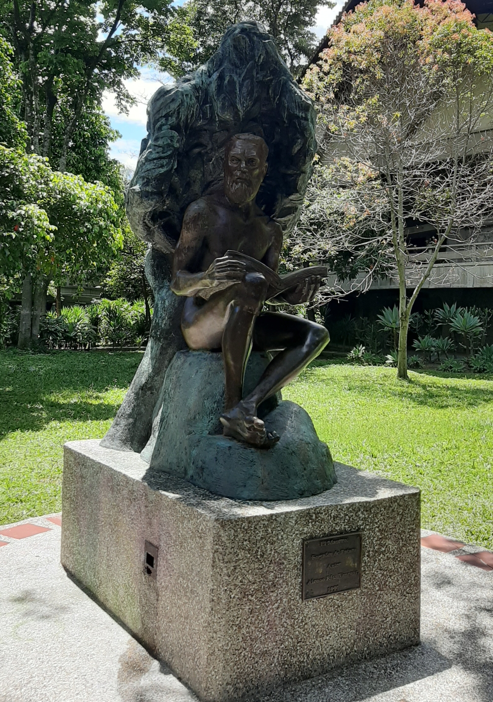

En este proyecto de varias páginas web quiero compartirles algunas de las cosas que más me gustan.
La obra de arte que se muestra a continuación, recibe el nombre de maestro forjador de futuro, una de las esculturas más hermosa que he conocido
Haz clic en el siguiente enlace para conocer un poco mas sobre el maestro forjador de futuro.
Algo más sobre el maestro forjador de futuro
Haz clic a continuación para conocer otra cosa que me gusta.
